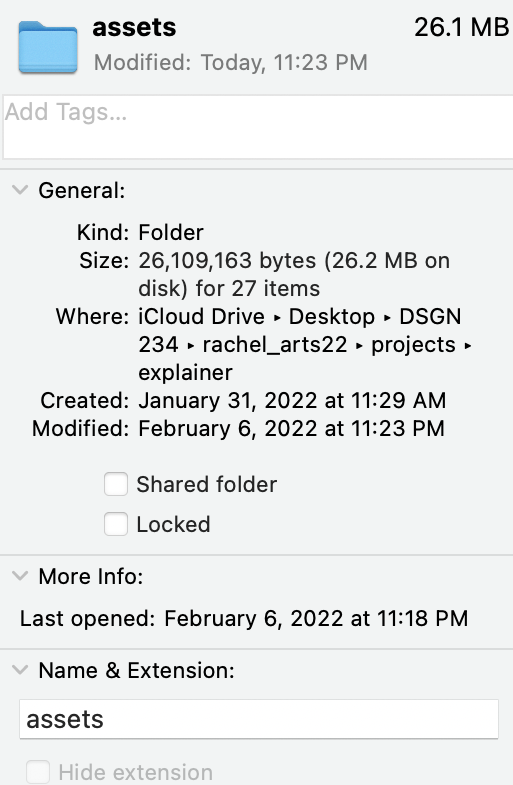

Go into Canva.com or the Canva app to choose a free template for your desktop
You will have to create a free account to get access to these
Change the colors of the template to match your liking, change the headings, and add personal elements such as quotes or pictures.
Use the sections to add in functional elements for your productivity. These can include your schedule, monthly calendar, goals, etc.
Save the file once you are done to your desktop.
Go into System Preferences, select "Desktop and Screensave", and drag your saved photo into the box to put a picture.
Create any needed folders and name them accordingly. You can also change the icons of the folder by hitting the "..." and then "get info" once you are in the folder.
Find a folder icon of your choice and use the "Copy" and "Paste" features to paste this icon onto the old icon of the folder in the top left corner.
Move any photos, folders, or other items to their dedicated sections and use the app "Stickies" to create any lists or notes to keep on your desktop.